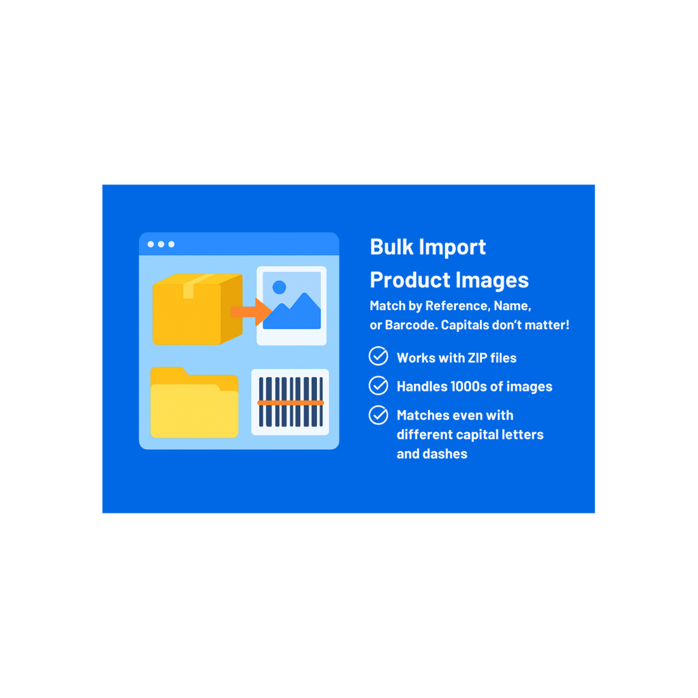

Bulk Image Importer
The Bulk Image Importer for Odoo makes product image management fast, accurate, and stress-free. No more renaming files or uploading one by one — just drop your images in a folder and let the app do the work.
What Makes It Smart
- Works no matter how your file names look:
Blue Chair.jpg, blue-chair.jpg, or Blue_Chair.JPG → all match the product Blue Chair.
CHAIR123.jpg → matches product chair123. - Bulk Upload: Import hundreds or thousands of images in one go.
- Smart Matching: Finds the right product by Internal Reference (SKU), Barcode, or Product Name.
- Duplicate-Safe: Skips images that are already uploaded.
- Error-Proof: Files that don’t match any product are skipped automatically.
- Handles Big Catalogs: Optimized for large imports without slowing down Odoo.
- Easy Wizard UI: Anyone can use it — no technical skills needed.
Why Choose This Importer?
It’s built to save you time, prevent mistakes, and handle real-world file names — making it the most reliable way
to keep your Odoo catalog updated with images.
Faster. Smarter. Easier.
Screenshots

.png)
.svg)
.png)
.png)
.png)